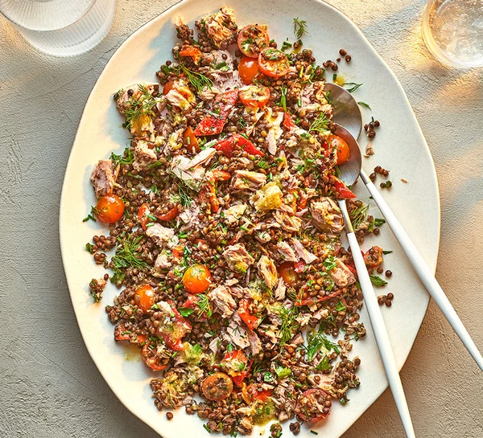

Lentil & tuna salad

Throw together this easy, no-cook lentil and tuna salad for a speedy and healthy lunch or supper. It takes just 15 minutes to make – ideal for busy days
Ingredients
- 2 tbsp sherry vinegar
- 1 tsp Dijon mustard
- 1 tsp Dijon mustard
- 50ml olive oil
- 2 x 250g pouches ready-cooked puy lentils
- 2 x 160g cans tuna steaks in spring water, drained and flaked
- 160g cherry tomatoes, halved (about 10)
- 2 ready-roasted peppers, chopped
- handful of parsley, finely chopped
- ½ small bunch of chives, finely chopped, plus extra to garnish
Steps
- Whisk the vinegar, mustard and garlic together in a small bowl. Slowly drizzle in the oil, whisking as you go, until emulsified, then season to taste.
- Add the lentils, tuna, tomatoes, peppers and herbs to a large bowl and toss together. Pour over the dressing and toss again. Divide between four bowls and garnish with the remaining chives.
Return to home